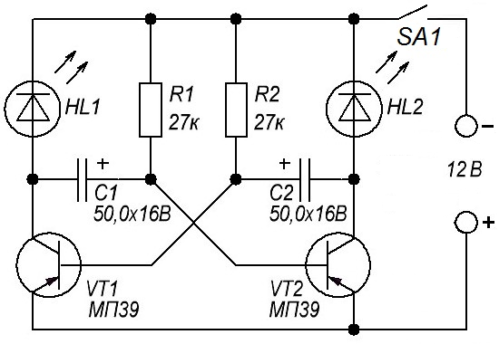
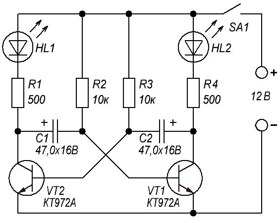
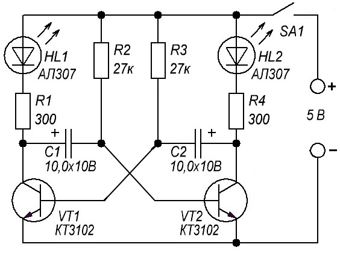
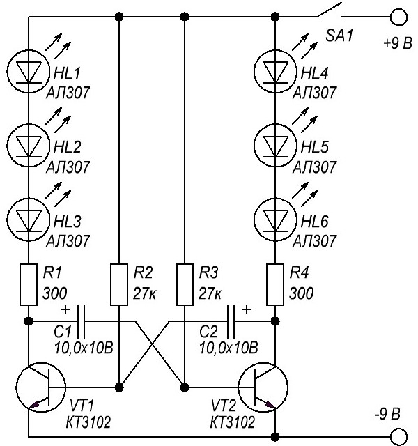
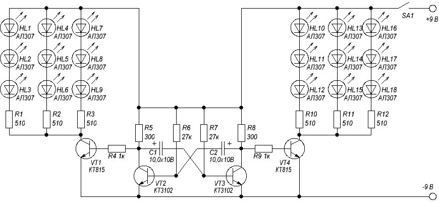
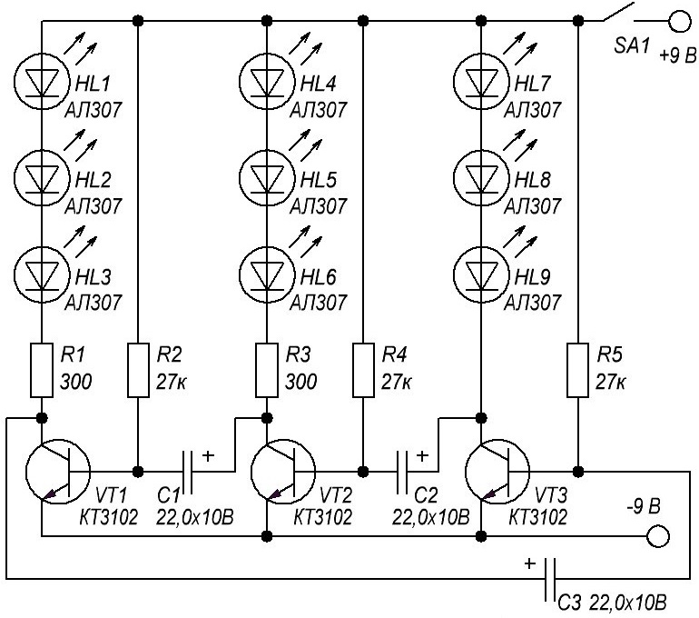
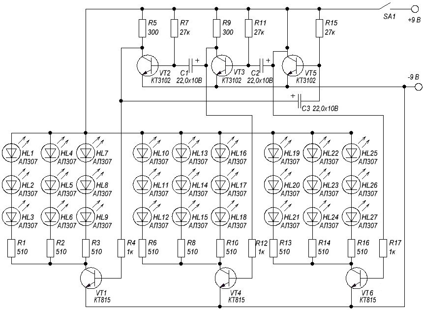

Мигалка на симметричном мультивибраторе
В основе приведенных ниже схем мигалок лежит симметричный мультивибратор. Применяются подобные мигалки во многих устройствах (например, проблесковые маячки в детских игрушках). На рисунке 1 показана схема симметричного мультивибратора на транзисторах структуры p-n-p, а на рисунке 2 - на транзисторах структуры n-p-n.

Таблица 1
| Обозначение | Наименование | Номинал | Количество | Примечание |
|---|---|---|---|---|
| HL1, HL2 | Светодиод | АЛ307 | 2 | можно 4 шт. |
| R1,R2 | Резистор | 27 кОм | 2 | |
| C1, C2 | Конденсатор электролитический | 50 мкФ/16В | 2 | |
| SA1 | Выключатель | 1 | ||
| VT1, VT2 | Биполярный транзистор | МП39 | 2 | МП40-МП42 |

Таблица 2
| Обозначение | Наименование | Номинал | Количество | Примечание |
|---|---|---|---|---|
| C1, C2 | Конденсатор электролитический | 47 мкФ/16В | 2 | |
| HL1, HL2 | Светодиод | АЛ307 | 2 | можно 4 шт. |
| R1,R4 | Резистор | 500 Ом | 2 | |
| R3,R2 | Резистор | 10 кОм | 2 | |
| SA1 | Выключатель | 1 | ||
| VT1, VT2 | Биполярный транзистор | КТ972А | 2 |
Если изменить номиналы резисторов или кондендсаторов – изменится частота переключения. Изменением частоты можно добиться очень интересных эффектов.

Таблица 3
| Обозначение | Наименование | Номинал | Количество | Примечание |
|---|---|---|---|---|
| C1, C2 | Конденсатор электролитический | 10 мкФ / 10 В | 2 | |
| HL1, HL2 | Светодиод | АЛ307 | 2 | |
| R1, R4 | Резистор постоянный | 300 Ом / 0,125 Вт | 2 | |
| R2, R3 | Резистор постоянный | 27 кОм / 0,125 Вт | 2 | |
| SA1 | Выключатель | 1 | ||
| VT1, VT2 | Транзистор биполярный | КТ3102 | 2 |
Частоту мигания можно изменять подбором сопротивлений резисторов R2 и R3. Если эти резисторы будут не одинаковых сопротивлений можно добиться того, что один светодиод будет светиться дольше другого.
На рисунке 4 показана схема, переключающая две гирлянды по три светодиода. Светодиодов стало больше, больше и напряжение, необходимое для их питания. Поэтому требуется источник питания на 9 В (или 12 В).

Таблица 4
| Обозначение | Наименование | Номинал | Количество | Примечание |
|---|---|---|---|---|
| C1, C2 | Конденсатор электролитический | 10 мкФ / 10 В | 2 | |
| HL1 - HL6 | Светодиод | АЛ307 | 6 | |
| R1, R4 | Резистор постоянный | 300 Ом / 0,125 Вт | 2 | |
| R2, R3 | Резистор постоянный | 27 кОм / 0,125 Вт | 2 | |
| SA1 | Выключатель | 1 | ||
| VT1, VT2 | Транзистор биполярный | КТ3102 | 2 |
Для увеличения числа светодиодов необходимо использовать последовательно-параллельное их включение: три светодиода, соединенные последовательно, образуют группу, а группы соединяются параллельно (рис. 5). Возрастающий ток через маломощные транзисторы КТ3102 может нарушить работу мультивибратора. Поэтому, используем дополнительные усилительные каскады на двух можных транзисторах КТ815.

Таблица 5
| Обозначение | Наименование | Номинал | Количество | Примечание |
|---|---|---|---|---|
| C1, C2 | Конденсатор электролитический | 10 мкФ / 10 В | 2 | |
| HL1 - HL18 | Светодиод | АЛ307 | 2 | |
| R1-R3, R10-R12 | Резистор постоянный | 510 Ом / 0,125 Вт | 6 | |
| R4, R9 | Резистор постоянный | 1 кОм / 0,125 Вт | 2 | |
| R5, R8 | Резистор постоянный | 300 Ом / 0,125 Вт | 2 | |
| R6, R7 | Резистор постоянный | 27 кОм / 0,125 Вт | 2 | |
| SA1 | Выключатель | 1 | ||
| VT1, VT4 | Транзистор биполярный | КТ815 | 2 | |
| VT2, VT3 | Транзистор биполярный | КТ3102 | 2 |
Для переключения трех светодиодных гирлянд существует схема «трехфазного мультивибратора» (рис. 6). Если светодиоды расположить в определенном порядке, можно получить эффект бегущего огня.
{kind=link}

Таблица 6
| Обозначение | Наименование | Номинал | Количество | Примечание |
|---|---|---|---|---|
| C1, C2 | Конденсатор электролитический | 22 мкФ / 10 В | 2 | |
| HL1 - HL9 | Светодиод | АЛ307 | 9 | |
| R1, R3 | Резистор постоянный | 300 Ом / 0,125 Вт | 2 | |
| R2, R4,R5 | Резистор постоянный | 27 кОм / 0,125 Вт | 3 | |
| SA1 | Выключатель | 1 | ||
| VT1 - VT3 | Транзистор биполярный | КТ3102 | 3 |
Скорость воспроизведения светового эффекта можно регулировать заменяя конденсаторы С1, С2 и С3 конденсаторами других емкостей. А так же заменяя резисторы R2, R4, R6 резисторами другого сопротивления. При увеличении емкости или сопротивления скорость переключения светодиодов снижается.
На рисунке 7 показан вариант на 27 светодиодов. В «мигалках» по схемам на рисунках 3 и 5 можно использовать практически любые светодиоды, но, желательно, повышенной яркости.

Таблица 7
| Обозначение | Наименование | Номинал | Количество | Примечание |
|---|---|---|---|---|
| C1, C2, C3 | Конденсатор электролитический | 22 мкФ / 10 В | 3 | |
| HL1 - HL27 | Светодиод | АЛ307 | 27 | |
| R1 - R3, R6, R8, R10, R13, R14, R16 |
Резистор постоянный | 510 Ом / 0,25 Вт | 9 | |
| R4, R12, R17 | Резистор постоянный | 27 кОм / 0,25 Вт | 3 | |
| R5, R9 | Резистор постоянный | 300 Ом / 0,25 Вт | 2 | |
| R7, R11, R15 | Резистор постоянный | 27 кОм / 0,25 Вт | 3 | |
| SA1 | Выключатель | 1 | ||
| VT1, VT4, VT6 | Транзистор биполярный | КТ815 | 3 | |
| VT2, VT3, VT5 | Транзистор биполярный | КТ3102 | 3 |
Источники:
Иванов А. РК-2014-11.
radiostorage.net - Мигалки на светодиодах и транзисторных мультивибраторах (6 схем)
radioskot.ru - Форум Простые радиосхемы для начинающих
casemods.ru - Простые схемы для желающих заниматься электроникой
sdelaysam-svoimirukami.ru - Простая мигалка для двух светодиодов